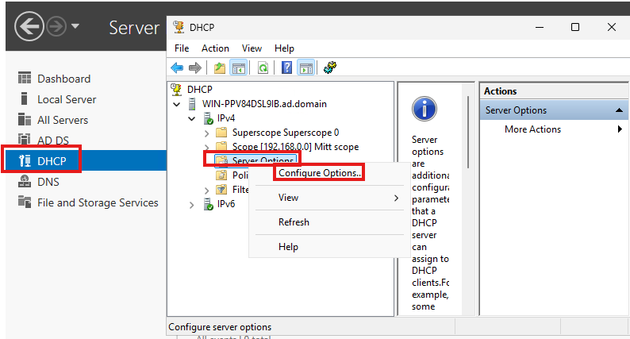
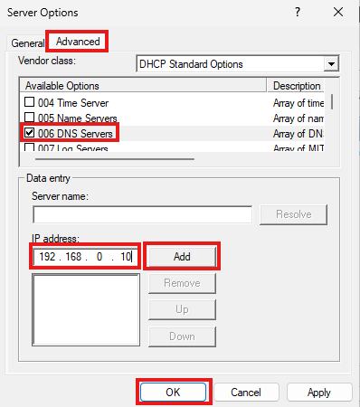
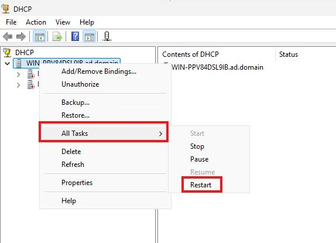

IT-Drift brukerveiledning Oppsett av AD
Her kan du legge inn steg-for-steg guider, med bilder og forklaringer.

Steg 1 – DHCP
Gå på DHCP
velg "Server Options"
deretter velg "Configure options"

Steg 2 – Server Options
Klikk på "Advanced"
Huk av 006 DNS Servers.
Skriv inn "192.168.0.10"
Klikk "Add"
Klikk "OK"

Steg 3 – Restart
Velg "All Task"
Deretter velg "Restart"